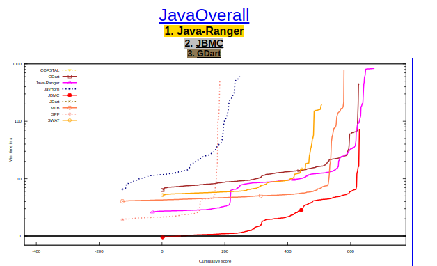

News
| Mar 23, 2025 | Java Ranger wins gold medal in SV-COMP 2025  |
|---|---|
| Mar 2, 2025 | Serving as organization admin and mentor for the JPF Organization in GSoC’25.  For Students: checkout project ideas For Students: checkout project ideas |
| Dec 9, 2024 | Serving as Program Committee for ISSTA 2025 Demonstration Track. |
| Sep 25, 2024 | Serving as proceedings co-chair for ASE 2025. |
| Jul 1, 2024 | |
| May 1, 2024 | Finished the Early Career Teaching and Learning program that the University of Minnesota. Great experience! |
| Apr 1, 2024 | Serving as organization admin and mentor for the JPF Organization in GSoC’24. For Students: checkout project ideas |
| Feb 23, 2024 | JPF accepted to Google Summer of Code 2024! @Students stay tuned for GSoC’24 project announcements! |
| May 15, 2023 | |
| Apr 1, 2023 | Serving as organization Admin for JPF in GSoC’23. For Students: checkout project ideas |
| Mar 9, 2023 | |
| Feb 1, 2023 | Serving as a mentor for JPF in GSoC’22. Java Ranger wins Bronze Medal (third-place) for the Java track at SV-COMP 2020! |
| Jan 15, 2023 | |
| Jan 14, 2023 | Accepted a Lecturer position at the department of Computer Science and Engineering at the University of Minnesota - USA. Accepted UMN Offer |
| May 20, 2022 | |
| Apr 1, 2022 | Serving as a mentor for JPF in GSoC’22. For Students: checkout project ideas |
| Feb 1, 2022 | Serving as a mentor for JPF in GSoC’22. Java Ranger wins Gold Medal (first-place) for the Java track at SV-COMP 2021! |
| Sep 1, 2021 | Just starting an instructor position at UMN. So excited! |
| Sep 1, 2021 | Just finished my internship at Amazon Applied Science ARG group! Great experience! |
| Sep 1, 2021 | |
| Feb 1, 2021 | Serving as a mentor for JPF in GSoC’22. Java Ranger wins Gold Medal (first-place) for the Java track at SV-COMP 2020! |
| Sep 1, 2020 | Just finished my internship at Google Summer of Code. Great experience at JPF! |
| Jun 1, 2020 | Just finished the Prepare Future Faculty Program that the University of Minnesota. Great experience! |
| Feb 1, 2020 | Had the pleasure of giving 2 guests lectures at Saint Thomas University in MN. Great experience! |
| Jan 15, 2020 | Watch YouTube video for our recent publication at FSE’20. |
| Jan 15, 2020 | |
| Jan 15, 2020 | Watch YouTube video for our recent publication at FSE’20. |